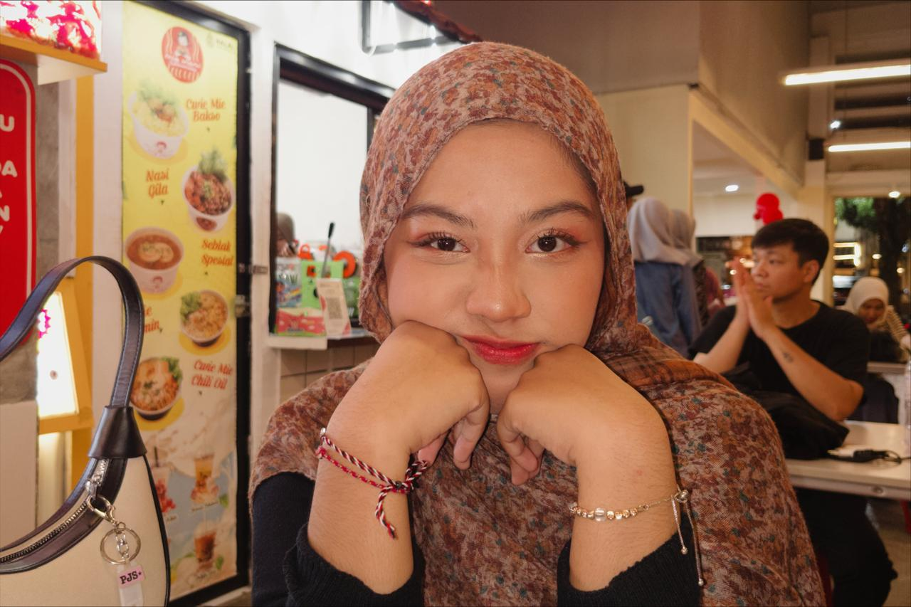

Click the interactive laptop screen to explore or use the panels below!

Hi! I'm Ildza, an Information Systems student at Universitas Brawijaya. A passionate leader, creative thinker, and detail-oriented team player. Welcome to my creative space where management meets visual exploration!
Organized by IYSA. Social Science Category. Project: "CUPERTEST : Curcumin Paper Test For Borax And Formalin Detector".
Organized by IYSA. Chemistry Category. Project: "CUPERTEST : Curcumin Paper Test For Borax And Formalin Detector".
Dipercaya memimpin & mengoordinasi 250+ mahasiswa angkatan 2025, menyusun proker, dan menjadi jembatan utama komunikasi.
Mengelola dan mengembangkan SDM organisasi, bertanggung jawab atas rangkaian program kerja internal.
Berpartisipasi aktif membangun ekosistem kolaboratif dan suportif bagi seluruh elemen mahasiswa departemen.
Mengelola aspirasi demokrasi serta mengomandani media kreatif informasi siswa (Feeds Instagram & TikTok).
Memimpin perancangan indikator orientasi mahasiswa baru DSI secara objektif dan terstruktur.
Penanggung jawab utama Pentas Seni & Musik Akhir Tahun. Mengatur alur teknis, anggaran, dan koordinasi lintas sie.
Konseptor utama teknis eksekusi acara serta koordinator pembagian tugas tim operasional.
Penanggung jawab citra acara, koordinasi publikasi, dan jembatan eksternal/internal.
Menyusun strategi fundraising, negosiasi kemitraan korporat untuk pendanaan acara skala besar.
Mengawasi standar kualitas operasional kegiatan dan evaluasi teknis harian acara.
Melakukan kurasi artikel, menyusun rancangan layout, serta visual sampul tahunan sekolah.
Mengelola administrasi program nasional dan menjadi PIC utama perlombaan nasional, mengoordinasi ratusan peserta.
Melakukan user research, wireframing, high-fidelity prototyping, dan kolaborasi produk digital lintas divisi.
Connect directly to my channels!